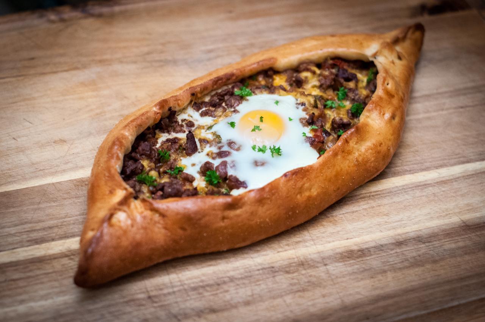

|  |
- Un-510gr,
- Xamirturush kukuni-10gr,
- O'simlik yog'i-25ml,
- Suv-240ml,
- Maydanoz(petrshka)-40gr,
- Chisnok-200gr,
- Qiyma-700gr,
- Garimdori-1dona,
- Shirin garimdori-200gr,
- Piyoz-180gr,
- Zira-2choy qoshiq,
- Garimdori kukuni-1 choy qoshiq,
- Tamat pastasi-40gr,
- Zaytun yog'i-50ml,
- Tabga ko'ra tuz,murch va shakar.
|